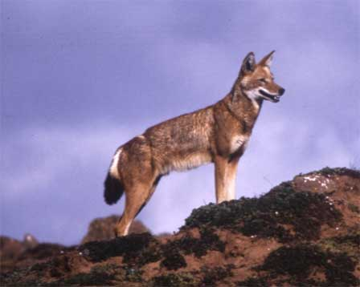
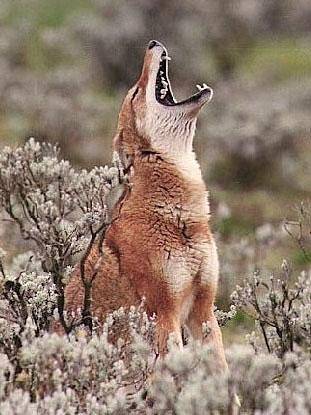

Lobo etíope
Descripción
Debido a la apariencia física de los lobos etíopes a menudo se confunden con el zorro chacal. Los lobos etíopes son de tamaño mediano, tienen patas muy largas y una boca más puntiaguda y alargada que otras especies. Estos lobos pueden ser de color rojo, marrón, y blanco, a medida que van cogiendo más edad su color se va oscureciendo.
Distribucción
Esta especie de lobos sólo se encuentra en África, y como su mismo nombre lo indica en Etiopía. Lamentablemente, solo existen siete localidades en donde viven los lobos etíopes. La mayoría de ellos residen en las montañas, aunque también se han identificado en las llanuras. Estos animales cuentan con orejas muy delgadas, y también tienen una cola más corta y más gruesa en el extremo que la cola de otras especies de lobos.
Comportamiento
Los lobos etíopes son menos agresivos que los demás lobos, y menos territoriales. Estos animales tratan de llevarse bien con otras manadas de lobos que se superponen en sus territorios. Sin embargo, dependen socialmente de los grupos a los que pertenecen, y parecen prosperar en sus manadas. Estos grupos suelen tener seis lobos adultos.
Dieta/Alimentacion
La mayor parte de la alimentación de los lobos etíopes la constituyen los roedores. Estos animales no cazan juntos, por eso deben ser capaces de obtener sus propios alimentos para poder sobrevivir.
Reproducción
En esta especie las manadas aumentan cuando llega el momento en de la reproducción. Se estima que más de la mitad del éxito de apareamiento de los lobos machos se produce fuera de la manada. Esto es muy diferente en otras especies. Las hembras de lobos etíopes dan a luz hasta seis cachorros a la vez, los machos nacidos en una manada permanecerán en la misma durante el resto de su vida. Las hembras salen cuando tienen dos años aproximadamente para poder encontrar a un compañero para aparearse, estas, generalmente, son aceptadas en otras manadas. En esta especie se aparea una hembra con un solo macho, al igual un macho con una sola hembra. Además tanto los alfas y como los betas están autorizadas a aparearse.
Conservación
El lobo etíope tiene una extrema necesidad de protección, ya que solamente existen cerca de 550 lobos etíopes adultos en la naturaleza, un número un poco bajo. Sin embargo, es muy difícil contar con exactitud los mismos debido a sus movimientos. Esta cifra es aproximada y está basada en una cuidadosa investigación. Estos lobos están protegidos por la ley, pero en Etiopía es muy difícil hacer que se cumplan las mismas. En Etiopía muchas personas poseen armas de fuego, es por eso que la matanza de lobos etíopes se ha convertido en algo común ya que la mayoría de los aldeanos toman las armas para matarlos y así poder alimentar a sus familias, todo esto se debe a la pobreza que existe en este país.